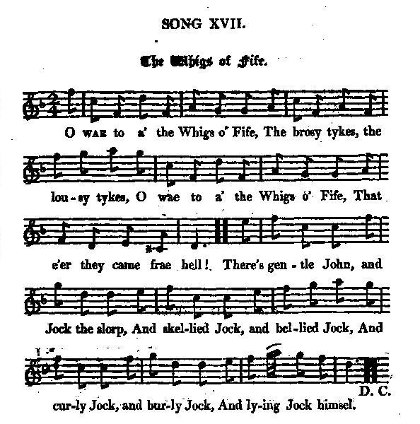

1° The Whigs of Fife
1° Les Whigs de Fife
Author unknown
Followed by "Bauldy Fraser", by Hogg, to the same tune
Tune -Mélodie"The Whigs of Fife" - Scottish Reel
from Hogg's "Jacobite Relics", Second Series, 1821 N°17
Sequenced by Ch.Souchon

|
"[This tune was] earliest published in Neil Stewart's 1761 Collection.
Therefore the tune cannot be attributed to William Marshall (1748-1833 -Scottish composer and music performer) who was only aged 13 in 1761... Very likely Marshall composed the last two parts as variations. Marshall was a convinced Tory all his life and appears to have had no love for the Whigs of the County of Fife, (Scotland). - Also published in Aird's "Selections" in 1782; - and in Gow's "Complete Repository, Part 1", in 1799." Source "The Fiddler's Companion" (cf. Liens). |
"[Ce morceau a été] publié pour la première fois dans le Recueil de Neil Stewart en 1761.
C'est pourquoi cette mélodie ne peut pas être attribuée à William Marshall (1748-1833 -Compositeur et musicien écossais) qui n'avait que 13 ans en 1761... On peut penser cependant que Marshall a composé les 2 dernières parties du morceau, qui sont des variations sur le thème initial. Marshall fut, toute sa vie, un Tory convaincu et il n'éprouvait, à l'évidence, aucune sympathie envers les Whigs du Comté de Fife, (Face à Edimbourg, au nord du Firth of Forth). - Egalement publié dans les "Sélections" d'Aird en 1782; - et dans le "Complete Repository, 1ère Partie" (Répertoire complet) de Gow, en 1799..." Source "The Fiddler's Companion" (cf. liens). |

|
THE WHIGS OF FIFE
CHORUS O wae to a' the Whigs o' Fife, The brosy tykes, the lousy tykes O wae to a' the Whigs o' Fife, That e'er they came frae hell! 1. There's gentle Jock, and Jock the slorp, And skellied Jock, and bellied Jock, And curly Jock and burly Jock, And lying Jock himsel. O wae etc. 2. Deil claw the traitors wi' a flail, That took the midden for their bail, And kiss'd the cow ahint the tail, That knav'd at kings themsel. O wae etc. 3. At sic a sty o' stinking crew, The very fiends were like to spew; They held their nose and crook'd their mou', And doughtna bide the smell. O wae etc. 4. But gin I saw his face again, Thae hunds hae huntit owre the plain, (King James) Then ilka ane should get his ain, And ilka Whig the mell. O wae, &c. 5. O for a bank as lang as a rail, And for a rape o' rapes the wale, To hing the tykes up by the tail, And hear the beggars yell! O wae to a' the Whigs o' Fife, The brosy tykes, the lousy tykes, O wae to a' the Whigs ' Fife, That e'er they came frae hell! Source: "The Jacobite Relics of Scotland, being the Songs, Airs and Legends of the Adherents to the House of Stuart" collected by James Hogg, Second series published in 1821. |
LES WHIGS DE FIFE
REFRAIN Malheur à tous les Whigs de Fife, Ces chiens adipeux ou pouilleux Malheur à tous les Whigs de Fife, Sortis de la géhenne! 1. Jock le mielleux, Jock le baveux, Jock le vendu, Jock le ventru, Jock le frisé, Jock le carré, Jock le menteur lui-même. Malheur etc. 2. Que le diable de sa cravache Punisse tous ces proctophages Qu'on voit baiser le cul des vaches Et s'en prendre aux rois mêmes! Malheur etc. 3. L'odeur de ces porcs attroupés Le diable en est importuné: Menton de travers, nez bouché, La puanteur le gêne. Malheur etc. 4. Mais si je vois rentrer demain, Celui qu'à fuir ils ont contraint, (le roi Jacques) A chacun ce qui lui revient: A chaque Whig sa peine. Malheur etc. 5. Qu'une poutre longue on m'accorde, Et qu'on me donne un choix de cordes! J'y pendrai par leurs queues la horde. Qu'elle hurle à perdre haleine! Malheur à tous les Whigs de Fife Ces chiens adipeux ou pouilleux Malheur à tous les Whigs de Fife Sortis de la géhenne! (Trad. Christian Souchon(c)2009) |
|
"The date of this rude rough song is quite uncertain. I meant to have published it in the first volume, and that near the beginning, as one of the most ancient ; opining, that in the enumeration of Whig Jocks, by burly Jock, might have been meant the celebrated John Balfour of Burly ; but this, with several others, fell aside about the printing office, and were never missed, till found this year among the return manuscripts. At all events, the style is more like the day of which we are treating than an age more remote. I have often heard that verse of the Jocks sung out of fun, when several Johns happened to be in company, but never any more of it. The air is coeval with the song, with all likelihood, bearing the same title in our old collections. The song is from Mr Graham's MSS., and was never before published."
(Hogg in "Jacobite Relics 2nd series", 1821) |
"Il n'est pas facile de dater ce chant fruste et grossier. Je voulais le publier au début du premier volume, le considérant comme l'un des plus anciens. J'étais d'avis que, dans l'énumération des "Jock" whigs (Jock désigne un Ecossais), "Burly Jock" (burly="costaud") désignait le célèbre Balfour de Burly. Mais ce morceau et plusieurs autres ont été égarés par l'imprimeur et je ne les ai retrouvés que cette année, lorsqu'il m'a retourné mes manuscrits après édition. D'ailleurs le style de ce morceau s'accorde mieux avec l'époque couverte par la 2ème série (à partir de 1715). J'ai souvent entendu chanter le "couplet des Jock" de façon facétieuse quand plusieurs Johns se trouvaient réunis, mais jamais le reste de la chanson ("Jock" en Ecosse, comme ""Jack" en Angleterre, est l'hypocoristique de "John"). L'air est vraisemblablement de la même époque que le chant, puisqu'il porte le même titre dans nos anciens recueils. Le présent chant est tiré du manuscrit de M. Graham est n'a jamais été publié à ce jour."
(Hogg dans "Jacobite Relics 2ème série", 1821) |
|
|
|
|
In the 1715 rising Fife, who had been during the Civil War and for many years thereafter hostile to the Stuarts, had undergone a complete revolution in opinions. Therefore the Earl of Mar, "Bobbing John" started operations by landing at Elie, a small port on the Fife Coast and meeting there prominent friends of the Jacobite cause. He then proceeded to the county of Perth.
|
A l'époque du soulèvement de 1715 le Fife, qui s'était montré hostile aux Stuarts pendant et longtemps après la guerre civile, avait subi un renversement d'opinion. C'est ce qui conduisit le Comte de Mar ("John l'Indécis") à débuter ses opérations dans cette province, en débarquant au petit port d'Elie pour aller rencontrer d'influents amis de la cause Jacobite. Puis il poursuivit sa route à travers le comté de Perth.
|
|
|
|
2° Bauldy Fraser
2° Fraser le Téméraire
Aftermath of Culloden
|
Bauldy Fraser
This ballad by James Hogg, was first published in "The Forest Minstrel", 1810, the first full collection of songs by Hogg, (where the tunes are nominated by title, without musical settings). Then in 1821, "a little altered", in "Jacobite Relics", Volume II, Appendix, Jacobite Songs, N°14, page 413 with the mention "For the air, see Song XVII, of this vol." [N°1 on the present page]. Baldy Fraser Another version appears in G.S. McQuoid's "Jacobite Songs and Ballads" in 1888, with this explanation on P. 489: "This version does not appear to be generally known. It was brought to my knowledge by the kindness of Dr. Charles Mackay. It was sent in April, 1887, by Sir Kenneth Matheson, junior, to the editor of the "Scottish Highlander" with the following note : "The enclosed ballad, which I think you will admit is worthy of a place in your excellent national paper, was dictated to me last winter by a veteran in his ninety-third year, who served as a lieutenant of the 78th Highlanders at Waterloo. He heard it in his early days, sung by the author, on the streets of Banff." There is another version of this song, by the Ettrick Shepherd, given among the modern songs in this volume, (No. 182, p. 388.), [which therefore is far from being entirely "his own", as it claims it]. |
Bauldy Fraser, Fraser le téméraire
Cette ballade de James Hogg fut d'abord publiée en 1810 dans le "Ménestrel de la forêt", le premier recueil de chants de Hogg, où les timbres sont identifiés par leurs titres, non par des partitions. Puis elle parut "un peu modifiée dans les "Reliques Jacobites", vo. 2, dans l'annexe "Chants Jacobites" sous le n°14, page 413, avec la mention: "Pour le timbre, cf. chant 17 du présent volume [N°1 de la présente page]. Baldy Fraser Une autre version figure dans les "Chants et ballades Jacobites" de G.S. McQuoid, édition de 1888, avec l'explication suivante en page 489: "Cette version ne semble pas être très connue. Elle a été portée à ma connaissance par un aimable contributeur, le Dr. Charles McKay. Lui-même l'avait reçue en avril 1887, de Sir Kenneth Matheson, Jr, qui l'avait envoyée à sa revue, le "Scottish Highlander" avec cette note: "La ballade ci-jointe, que vous estimerez, je pense, digne de prendre place dans votre excellente revue nationale, m'a été dictée, l'hiver dernier, par un ancien soldat, âgé de 93 ans, qui servit comme lieutenant dans le 78ème Highlanders à Waterloo. Il l'entendit chanter, par son auteur, dans les rues de Banff". Il existe une autre version de ce chant, par le Berger d'Ettrick (James Hogg), reproduite parmi les chansons modernes de ce volume (N° 182, p.388), [lequel, de ce fait, est loin d'être entièrement "de lui", comme il l'affirme.]" |
|
BAULDY FRASER
MODERN ("is my [Hogg's] own and a little altered from the copy in "The Forest Minstrel") 1. My name is Bauldy Fraser, man ; I'm puir, an' auld, an' pale, an' wan, I brak my shin, an' tint a linn, Upon Culloden lee, man : (twice> Our Highlan' clans were pauld an' stout, An' thought to gie te loons a clout, An' laith were they to turn about, An' owre the hills to flee, man. (twice) 2. But sic a hurly-burly raise, Te fery lift was in a plaze, As a' te teils had won ter ways, On Highlandmen to flee, man : Te cannon an' te pluff tragoon, Sae proke our ranks, an' pore us town, Her nainsell ne'er cot sic a stoun, Sin' she was porn to tee, man. 3. Pig Satan sent te plan frae hell, Or pat our chiefs peside hersel, To plant her in te open fell, In pase artillery's ee, man : For had she met te tirty duke, At ford of Spey or Prae-Culrook, Te plood of every foreign pouk Had dyed the Cherman sea, man. 4. We fought for a' we loved an' had, An' for te right, put Heaven forpade; An' mony a ponnie Highlan' lad Lay pleading on te prae, man. Fat could she to, fat could she say, Te praif McDonnell was away ; An' her ain chief tat luckless day Was far ayont Drumboy, man. 5. Macpherson and Macgregor poth, Te men of Muideart an' Glenquoich, An' coot Mackenzies of te Doich, All absent frae te field, man: Te sword was sharp, te arm was true, Pe honour still her nainsel's due; Impossibles she could not do, Tho' laithe she pe to yield, man. 6. When Charlie wi' te foremost met; Praif lad, he thought her pack to get; " Return, my friends, an' face tem yet, We'll conquer or we'll die, man :" Put Tonald shumpit o'er te purn, An' swore, pe Cot, she wadna turn, For ter was nought put shoot an' purn, An' hangin' on te tree, man. 7. O had you seen tat hunt of teath, She ran until she tint her praith, Aye looking pack on Scotland's skaithe, Wi' hopeless, shining ee, man : Put Pritain ever may teplore, Tat tay upon Culloden more, Her praifest sons laid in ter gore, Or huntit cruellye, man. 8. O Cumberland what meant you ten, To ravage ilka Highland glen ? Her crime was truth an' love to ane, She had nae spite at thee, man; An' you an' yours may yet pe glad, To trust te honest Highland lad; Te ponnet plue, an' pelted plaid, Will stand te last o' three, man. Source: "The Jacobite Relics of Scotland, being the Songs, Airs and Legends of the Adherents to the House of Stuart" collected by James Hogg, Second series published in 1821. |
FRASER LE TEMERAIRE
MODERNE (en 1821) ("de [Hogg], tiré, après modification, du "Ménestrel de la Forêt") 1. Je suis Fraser, le téméraire, Livide et vieux, un pauvre hère, Main coupée, tibia de travers: Trophées de Drummossie: (bis) Nos clans, aussi vaillants que droits, Mettraient l'Anglais hors de combat. Chez eux, s'enfuir ne se fait pas, La retraite est bannie! (bis) 2. Mais d'entrée leur artillerie Sème panique et incendie. Tous les diables en panoplie Sur les Gaëls s'acharnent: Les canons et les dragons noirs Brisaient nos rangs, il fallait voir! De tels moments de désespoir Qu'à jamais Dieu m'épargne! 3. D'enfer, inspiré par Satan A nos chefs, provenait le plan D'aller s'exposer en plein champ A leur artillerie. Eussions nous rencontré le Duc Au Gué de Spey, à Bray-Culrook, On eût vu du sang des métèques Toute la mer rougie. 4. Nous qui luttions pour l'essentiel, Nos biens, le droit, fûmes du Ciel Condamnés à ce sort cruel: Mourir d'hémorragie. Que peut-on dire ou faire quand Le Clan McDonald est absent Et que ce jour-là leur chef s'en Va loin de Drummossie. 5. McPherson, McGregor et tous Ceux de Moidart et de Glencoe Et les braves McKenzie nous Manquaient. Ah quel dommage! Fer acéré, bras entraîné Bien qu'ils n'aient point démérité Ne pouvaient sans fuir éviter Cet ignoble carnage. 6. Quand Charlie vit les fantassins De l'avant rebrousser chemin, Il tenta bien de mettre fin A cette débandade. Mais Donald sautant le ruisseau Jura par Dieu que pour rien au Monde, il irai risquer sa peau, Pour qu'on les pende aux arbres. 7. Si vous aviez vu cette course, Cette fuite à perdre le souffle, Vous auriez su que l'on étouffe Et à jamais, l'Ecosse. Mais Britannia peut déplorer Qu'à Culloden on vit tomber Ses meilleurs fils ensanglantés Poursuivis par ses hordes. 8. O pourquoi, Cumberland, ainsi T'acharner sur notre pays, Coupable d'aimer un banni, Mais non de tromperie? Le dernier des trois peut compter Sur la fidèle honnêteté Des bonnets bleus, des plaids plissés Pour défendre sa vie! (Trad. Christian Souchon (c) 2010) |
BALDY FRASER
OLD VERSION Sent to Dr Charles McKay By Sir Kenneth Matheson Jr. 1. My name 'tis Baldy Fraser, man, I'm poor, I'm auld, I'm pale, I'm wan, I brak my sheen, I tint my han', Upon Culloden's lea, man. Our Hieland clans are bauld and stout, They thought to turn their foes about, But got that day a desperate rout, And o'er the hill did flee, man. Chorus: Sic hurly-burly ne'er was seen, Wi' cuffs, and buffs, and blindit een, Our Hieland swords o' metal keen, Were gleaming gran' to see, man. 2. Sure Charlie and the great Lochiel, Had been that day beside themsel', To plant us in the open field, In the artillery's e'e, man. For doun we drappit dad for dad, I thought it wad ha'e put me mad, To see sae mony a Hieland lad, Lie bleedin' on the lea, man. Sic hurly, etc 3. But had we met wi' Cumberland, On Athole's braes, or yonder strand, The blood o' a' his savage band, Had dyed the German Sea, man. An' cousin Geordie up the gate, We would have youfed frae Charlie's seat, An' sent him hame wi' honour great, To bide in Germanie, man. Sic hurly, etc 4. Oh! had ye seen the flight o' death, We ran until we tint our breath, Nor lookit back for fear o' scaith, But o'er the hill did flee, man. Yet Britons ever must deplore, That day upon Drummossie muir, Where thousands ten were drenched in gore, Or hung out owre a tree, man. Sic hurly, etc 5. Ah ! Cumberland, what meant ye then, To ravage ilka Hieland glen? Our faith and troth was a' for ane, We had na cheetit thee, man. But you and yours may yet be glad To trust an honest Hieland lad, The bonnet blue, and belted plaid, Will stand the last o' three, man. Sic hurly, etc 6. Noo wha would Baldy Fraser wrang, I made mysel' this scanty sang, I'll sing it out baith loud and lang, As lang's I've breath to draw, man. I'm honest, but I'm unco puir, I beg my bread frae door to door, Because I joined the Royal corps, There's nane'll pity me, man. Sic hurly, etc Source: "Jacobite Songs and Ballads" edited by Gilbert Samuel McQuoid, London, 1888, N° 148, page 311. |
FRASER LE TEMERAIRE
ANCIENNE VERSION Envoyée au Dr Charles McKay Par Sir Kenneth Matheson Jr. 1. Je suis Fraser le téméraire, Livide et vieux, un pauvre hère Je boite et ma main dans la terre Repose à Drummossie! Nos clans, aussi vaillants que droits, Pensaient remporter le combat. Or la fuite fut, ce jour-là, Leur plus fidèle amie. Refrain: Quand vit-on tel charivari! Yeux pochés et bras raccourcis Bel éclat de l'acier durci De nos lames polies! 2. Charles et Lochiel c'est certain Avaient perdu tous leurs moyens: Aller choisir un tel terrain Face à l'artillerie! Comme des mouches nous tombions. Je pensais perdre la raison De voir ainsi tous nos garçons Exsangues et sans vie. Quand vit-on... 3. Eussions-nous bravé Cumberland Sur la grève ou dans les Highlands, Du sang de tous ces mécréants La mer serait rougie. Le cousin George eût repassé La porte et le siège vidé Nous l'aurions chez lui renvoyé, Là-bas, en Germanie. Quand vit-on... 4. Pour sauver nos vies nous fuyions. A perdre haleine nous courions Et sans nous retourner, ça non! Bien loin de Drummossie. Britannia, tu dois déplorer Qu'à Culloden, et par milliers, Tes fils égorgés ou branchés, Subirent l'infamie. Quand vit-on... 5. O, pourquoi, Cumberland, ainsi T'acharner sur notre pays, Coupable d'aimer un banni, Mais non de tromperie? Le dernier des trois peut compter Sur la fidèle honnêteté Des bonnets bleus, des plaids plissés Pour défendre sa vie! Quand vit-on... 6. Brave Fraser, qui t'en voudrait D'avoir troussé ces six couplets Que tu n'as plus qu'à rabâcher Comme une litanie? Honnête, je suis sans un sou, Mendiant mon pain un peu partout. En vain: j'ai porté l'habit rou- Ge, adieu, la sympathie! Quand vit-on... (Trad. Christian Souchon (c) 2010) |